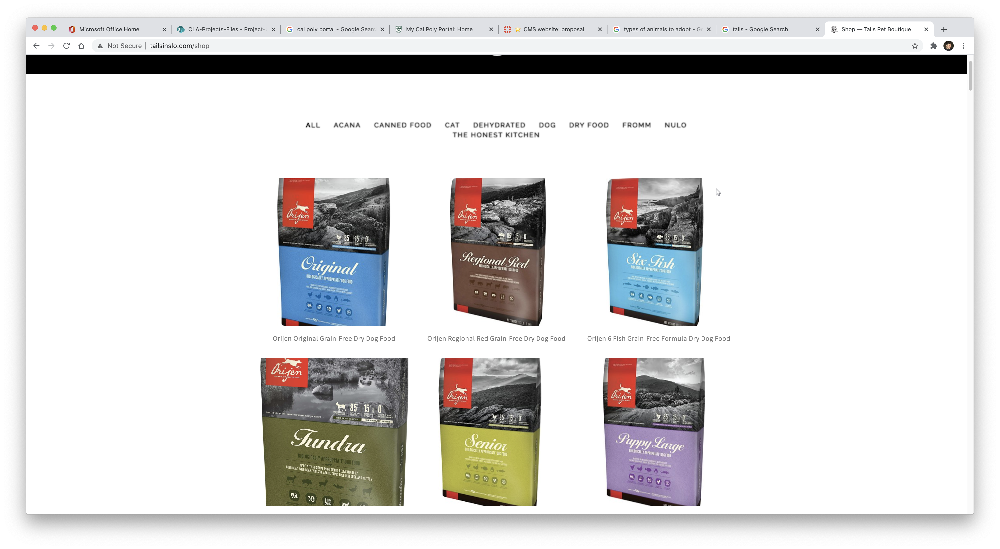
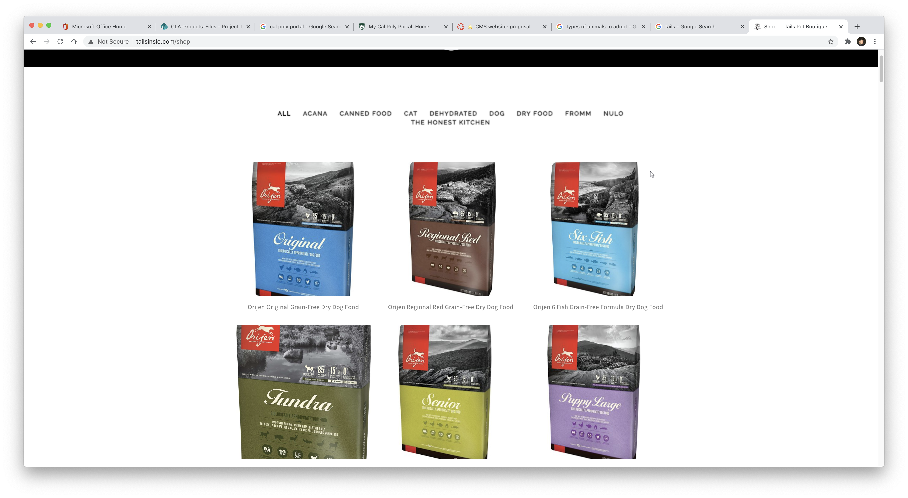
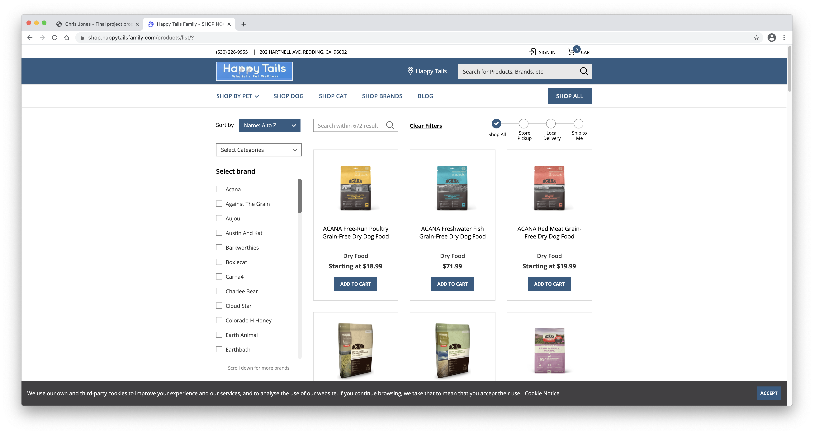
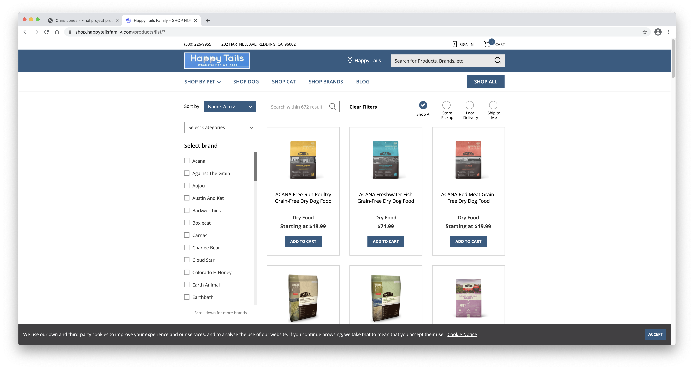
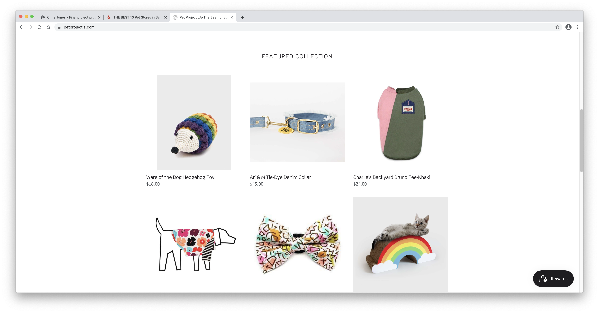
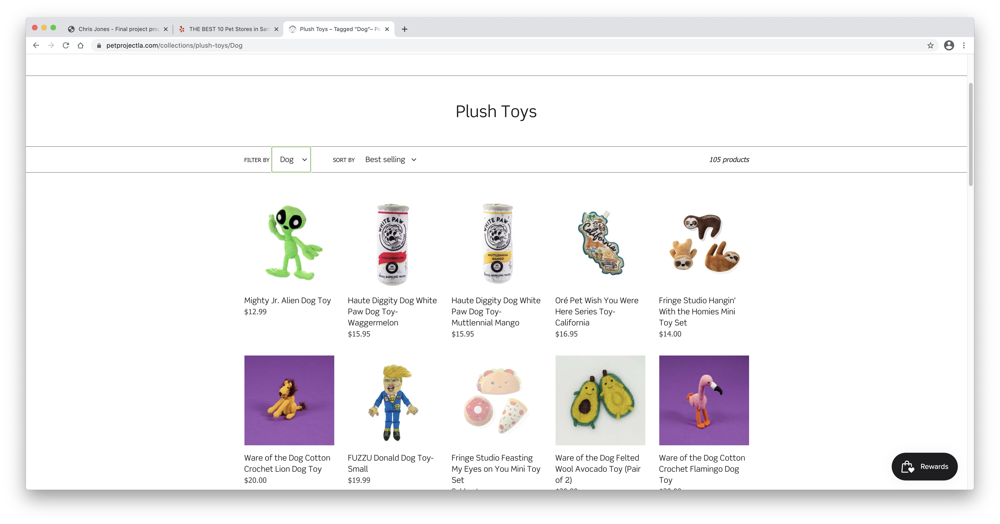

Final project proposal
Introduction
King Kanine Co.
Founded in 2020, King Kanine Company is a family owned pet shop right here in San Luis Obispo, named after the dog who inspired it, King J. Jones. Here at KKC, we are dedicated to providing only the best for you and your furry (or not so furry) friend. Whether its dogs, cats, rabbits, "pocket pets" like hamsters, mice and guinea pigs, or fish and other aquatic friends, we got what you need to make your pet feel like royalty.
Target audience
King Kanine Co. is for anyone with a household pet in need of pet related supplies or looking to adpot a pet. Similar to other pet supply stores, KKC is universally for anyone person with an interest or need in pets or pet supplies. This includes, but not limited to: men, women, children, families, individuals, young and old, single or coupled, anyone can find something appealing for their pet here.
The primary goal is to display pets up for adoption, shop top brand supplies like leashes, bowls, toys, tanks, and food or treats, to name a few. Users are able to search for specific items or contact the shop for questions and answers. Also included are helpful tips for beginning pet owners such as what dog/ or food to feed puppy, adult or old animals. The site will display the same sort of friendliness and warm welcome the user would find in person at the store.
Comparative analysis
Tails Pet Boutique
 

Happy Tails Wholistic Pet Wellness
 

Pet Project LA
 Website content
Home
Welcome! Take a look at the pets available for adoption today. Or shop for quality pet supply brands. At King Canine Co., our goal is to make your pet feel like royalty.
[Display of happy, energetic dogs and cats up for adoption.]
Adopt
Looking to adopt, well look no more. All the pets listed here are ready to find their forever home. Call or email to learn more about the animal you've want to take home!
[Picture of a recently adopted puppy held by an overjoyed, young child.]
Shop
[Wide view of popular items and supplies sold in store.]
You're looking? We got it. Browse our selection of top brand items and supplies. If you can't find what you're looking for, give us a call and we can have it shipped right to our store!
Contact
[Extrior front view of KKC store.]
Connect with us! Got questions? We got answers!
Call us: 805-756-1140
Email us: kkc@slo.com
Find as here: 26 Graphic Rd. San Luis Obispo, CA 93407
[Google maps screenshot of KKC store location.]
Follow us:
Instagram: @kkcslo
Facebook: King Kanine Co. San Luis Obispo
[Icon links to Facebook and Instagram.]
Helpful Tips and Tricks
[Picture of a woman and dog nicely talking a walk.]
[Picture of a young kid with a bag of newly bought fish.]
It can be hard as a first time pet owner. Even an experienced owner can face some challenges. We've heard it all, so we wrote it down here! Can't find what you're looking for? Call or email us!